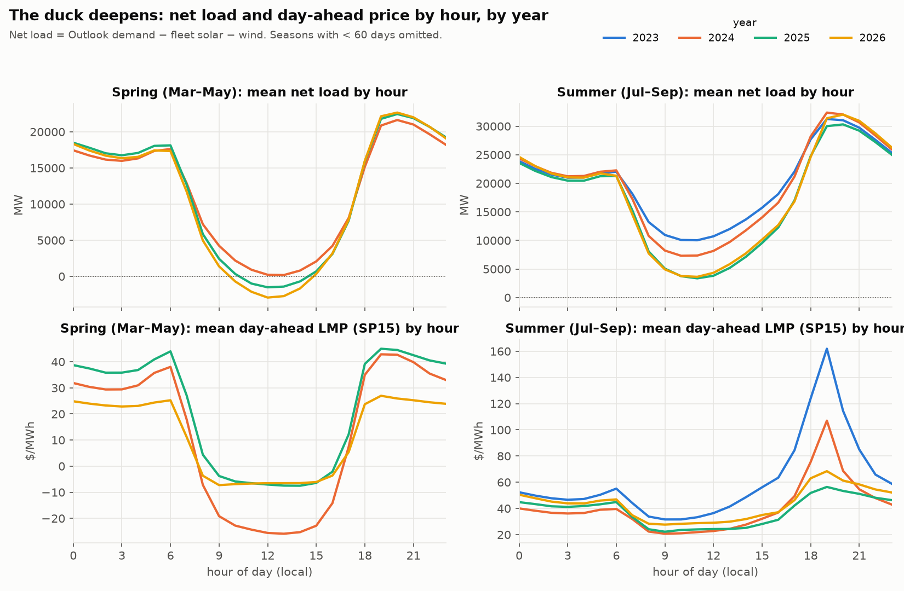
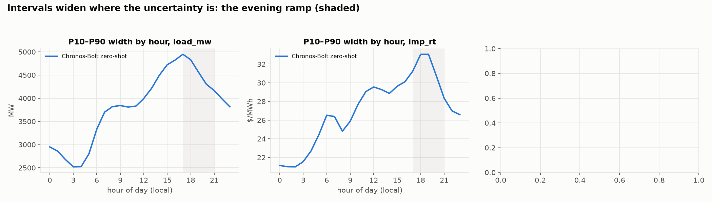
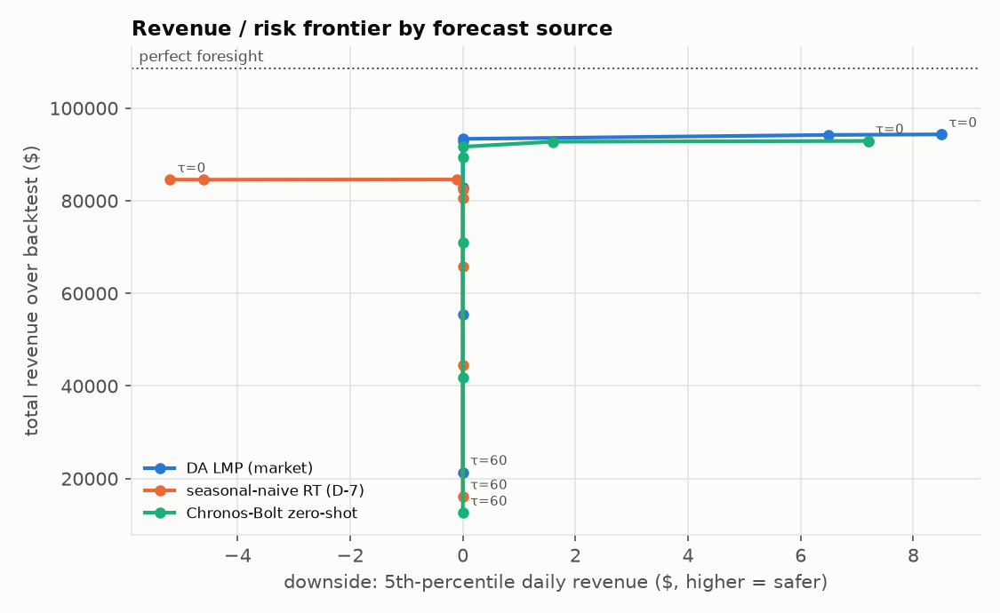

Every afternoon a job commits tomorrow's 24-hour SP15 load & real-time price forecast to the repo before the day-ahead market clears, then grades it against actuals the next day. Baseline that counts: CAISO's own published day-ahead load forecast; for price, the day-ahead LMP.
**Grid briefing for 2026-10-09** (issued 2026-10-09T00:17:44Z UTC, model trained through 2026-10-07). Forecast peak load 34,732 MW at 17:00 local (P10–P90 33,467–36,349); overnight minimum 24,480 MW. Afternoon-to-evening rise about 4,784 MW. Real-time SP15 price: median peak $54/MWh at 17:00, P90 $67 (mean-model peak $104, which sits above P90 when the day is skewed); daily median $43. Uncertainty band is narrower on the evening ramp (1,728 MW) than at midday (2,462 MW). Chronos zero-shot peak 42,056 MW (above ours by 7,324 MW).
# Tournament scoreboard — walk-forward 2024-07-01 → 2026-09-06 Identical rows, identical splits for every entrant. Spike/severe = hours whose actual DA LMP ≥ p95 / p99 of the full window. Weather features: strict variant (no run newer than the 09:00 D-1 origin). ## target `load_mw` — MAE (MW), n=19143 hours | split | CAISO official DA forecast | Chronos-Bolt zero-shot | seasonal-naive (D-7) | |:-----------------|-----------------------------:|-------------------------:|-----------------------:| | all | 512.1 | 1202.1 | 1891.6 | | regime=normal | 504.5 | 1183.7 | 1863 | | spike+severe | 884.5 | 2109.7 | 3298.1 | | regime=severe | 1413.5 | 3237.3 | 5190.9 | | ramp hours 17-21 | 566.6 | 1580.9 | 2366.3 | RMSE / bias / MAPE, all hours: | model | RMSE | bias | MAPE | |:---------------------------|--------:|-------:|-------:| | Chronos-Bolt zero-shot | 1814.79 | 3.7 | 4.82 | | CAISO official DA forecast | 719.17 | 106.96 | 2.1 | | seasonal-naive (D-7) | 2830.5 | 20.22 | 7.51 | By season (MAE): | split | CAISO official DA forecast | Chronos-Bolt zero-shot | seasonal-naive (D-7) | |:--------------|-----------------------------:|-------------------------:|-----------------------:| | season=autumn | 414.5 | 896.8 | 1520.6 | | season=spring | 462 | 1195.7 | 1534.5 | | season=summer | 621.1 | 1592.2 | 2676.9 | | season=winter | 440.6 | 740.6 | 1148.6 | By year (MAE): | year | CAISO official DA forecast | Chronos-Bolt zero-shot | seasonal-naive (D-7) | |-------:|-----------------------------:|-------------------------:|-----------------------:| | 2024 | 588.8 | 1381.5 | 2362.7 | | 2025 | 475.6 | 1079.8 | 1622.2 | | 2026 | 509 | 1249.3 | 1939.4 | ## target `lmp_rt` — MAE ($/MWh), n=19152 hours | split | Chronos-Bolt zero-shot | DA LMP (market) | seasonal-naive RT (D-7) | |:-----------------|-------------------------:|------------------:|--------------------------:| | all | 9.8 | 7.2 | 14.2 | | regime=normal | 9 | 6.3 | 13.2 | | spike+severe | 48.6 | 48.3 | 62.5 | | regime=severe | 105.5 | 147.2 | 112.8 | | ramp hours 17-21 | 12.8 | 10.8 | 18.7 | RMSE / bias, all hours: | model | RMSE | bias | |:------------------------|-------:|-------:| | Chronos-Bolt zero-shot | 22.21 | -1.52 | | DA LMP (market) | 19.58 | 1.56 | | seasonal-naive RT (D-7) | 31.13 | 0.03 | By season (MAE): | split | Chronos-Bolt zero-shot | DA LMP (market) | seasonal-naive RT (D-7) | |:--------------|-------------------------:|------------------:|--------------------------:| | season=autumn | 9.1 | 6.7 | 11.7 | | season=spring | 9.9 | 6.6 | 13.7 | | season=summer | 10.5 | 8.2 | 16.3 | | season=winter | 9 | 6.4 | 12.9 | ## target `lmp_da` — MAE ($/MWh), n=19152 hours | split | Chronos-Bolt zero-shot | naive DA (D-2) | seasonal-naive DA (D-7) | |:-----------------|-------------------------:|-----------------:|--------------------------:| | all | 6.8 | 8.7 | 10.7 | | regime=normal | 6.2 | 8.1 | 9.9 | | spike+severe | 36.5 | 39.1 | 49.1 | | regime=severe | 128.8 | 114.2 | 149.6 | | ramp hours 17-21 | 9.3 | 10.8 | 14.4 | RMSE / bias, all hours: | model | RMSE | bias | |:------------------------|-------:|-------:| | Chronos-Bolt zero-shot | 13.2 | -0.91 | | naive DA (D-2) | 16.27 | -0.03 | | seasonal-naive DA (D-7) | 19.88 | -0 | By season (MAE): | split | Chronos-Bolt zero-shot | naive DA (D-2) | seasonal-naive DA (D-7) | |:--------------|-------------------------:|-----------------:|--------------------------:| | season=autumn | 6.2 | 8.4 | 9 | | season=spring | 6.6 | 8.6 | 9.7 | | season=summer | 7.4 | 9.2 | 12.2 | | season=winter | 6.2 | 7.9 | 10.2 |



Source: github.com/anjalimitt2k/anjaliprojects. Rendered 2026-10-09 00:19 UTC.